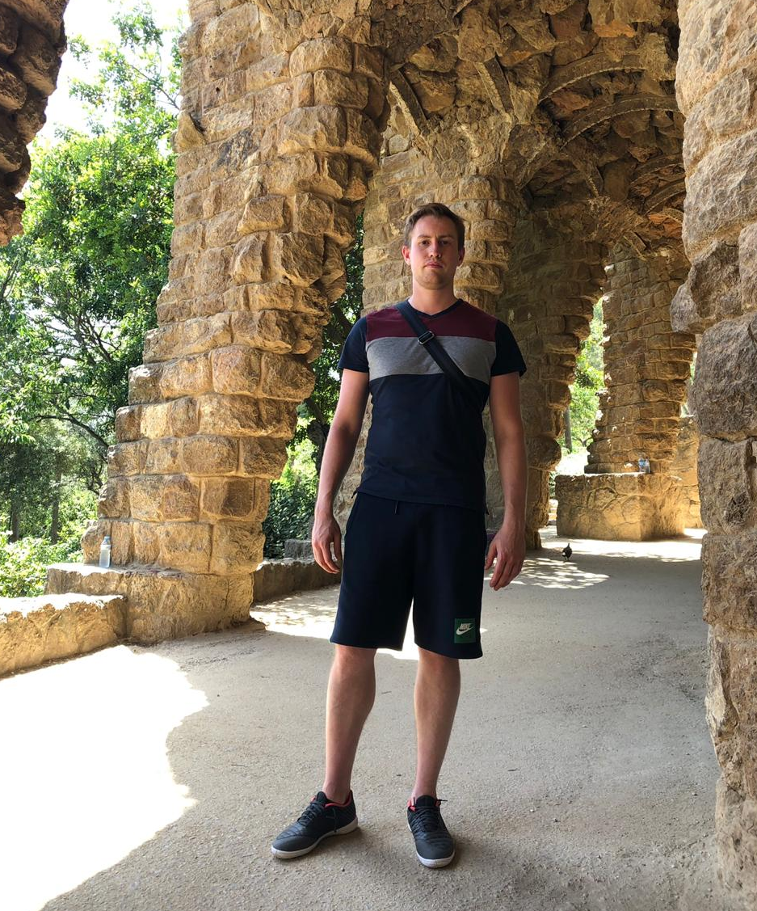

Алексей Калинин
ruby on rails developer

Информация
Местро жительства: г. Москва
Дата рождения: 29.07.1990
Моб.: +7 (916) 267-77-78
Почта: aa.kalinin.aa@gmail.com

Навыки
- Ruby
- синтаксис
- code style
- ООП, классы, наследование
- gems
- irb
- rvm
- Ruby on Rails
- MVC
- REST
- bundler
- основы проектирования приложений
- локализация, i18n
- ActiveRecord associations
- ActiveRecord query
- ресурсы
- безопасное хранение secrets, credentials
- настройка отправки писем с ActionMailer
- загрузка файлов с carrierwave
- ActionCable, создание каналов, работа по шаблону pub/sub
- ActiveJob, бекэнд-адаптеры: resque, inline, async
- делой с Capistrano
- авторизация с помощью Pundit
- devise
- rails_admin
- Frontend
- HTML, CSS
- основы веб-дизайна (сетка, шрифты, цвета, проектирование)
- селекторы СSS
- отзывчивая верстка
- верстка на Bootstrap 4
- основы JS, JQuery
- работа с элементами DOM
- обработка JQuery событый
- JQuery эффекты
- использование AJAX запросов в rails приложениях
- Тестирование
- TDD
- юнит тесты Rspec
- интеграционные тесты capybara
- FactoryBot
- БД
- основы языка SQL
- хранение, запись в SQlite и PostgreSQL
- SQL joins
- XML, JSON
- чтение, запись файлов с помощью встроенных ruby библиотек
- Сервер
- создание vps сервера
- настройка nginx
- настройка passenger
- настройка DNS, SPF
- настройка postgreSQL, Redis
- Heroku
- деплой приложений
- настройка аддонов
- конфигурация переменных окружения
- работа с Heroku cli в терминале
- логи
- Инструменты
- linux(ubuntu, mint)
- терминал
- vim, sublime
- IDE (Rubymine)
- debuger (buebug)
- GIT
- храние файлов на AWS S3
- настройка почты для домена
- защита от спама с Recaptcha
- OAuth
- авторизация через соцсети по схеме Authorization code flow
- покрытие rspec тестами
- настройка omniauth для devise
Образование
- Высшее образование
-
2013 - Московский авиационный институт
радиоэлектроника летательных аппаратов, cредства радиоэлектронной борьбы -
2016 - Московский государственный лингвистический университет
международные отношения
- Курсы
-
2017 - Центр компьютерного обучения "Специалист"
основы программирования и баз данных -
2017 - Центр компьютерного обучения "Специалист"
программирование на языке Ruby -
2020 - Онлайн курс "Хороший программист"
программирование на Ruby on Rails
Опыт работы
-
ООО "С-Групп сервис" - Руководитель отдела продаж
март 2018 — май 2020- за год увеличил объем прибыли на 25%
- за 2 года организовал работу с 2-мя новыми компаниями-заказчиками (отели крупнейших сетей 4 и 5 звезд)
-
Министерство обороны РФ - Советник
июль 2013 — февраль 2018- в короткие сроки дошел от начальных позиций до дожности советника
- участвовал в переговорах с ведомствами иностранных государств по вопросам сотрудничества
- участвовал в разработке межгосударственных и межправительственных соглашений
-
ОАО ГСКБ «Алмаз-Антей» - инженер
январь 2011 - март 2012- тестировал программы симуляции комплексов ПВО
- осуществлял проверку радиотехнического оборудования
-
ГОУ "Лицей №1560" - технический специалист
сентябрь 2005 - май 2007- настройка и обслуживание звуковой, световой и видео аппаратуры.
- настройка компьютерной техники (диагностика, подключение, установка ПО, ОС)
Обо мне
- Отличительные качества
- быстрое внедрение в рабочий процесс
- обработка большого количества информации
- логическое и аналитическое мышление
- нацеленность на результат
- Увлечения и хобби
- футбол
- музыка
- театр
- авто
- Иностранные языки
- Английский - Upper Intermediate